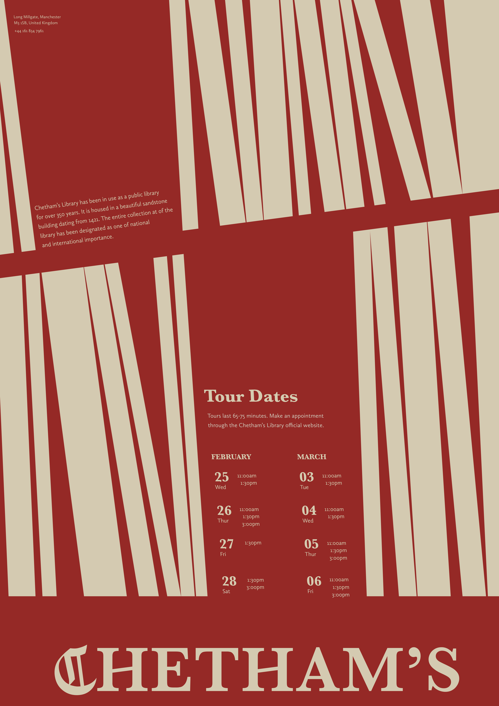
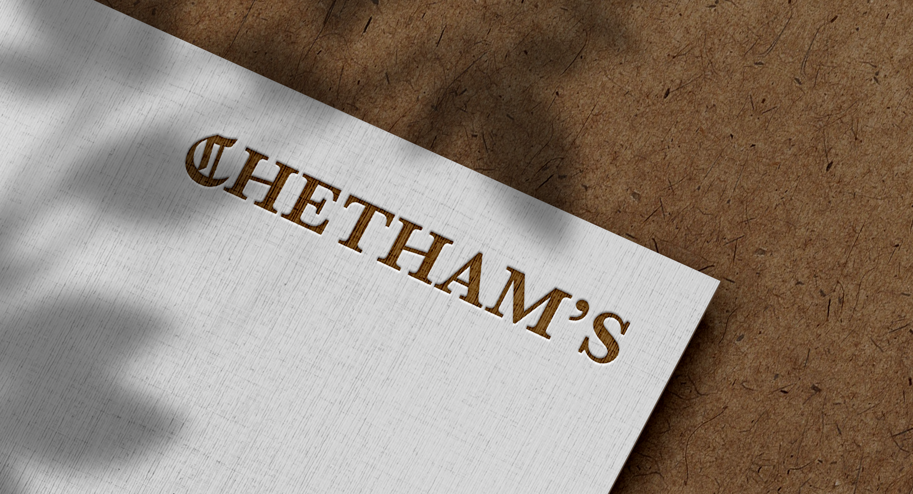

Rebranding:
Chetham's Library
년도
작업 도구
지도 교수
2026
Indesign, Illustrator, Photoshop
Aggie Toppins

Context
체담 도서관은 맨체스터에 위치한 영국에서 가장 오래된 공공 도서관입니다. 본 리브랜딩은 이 장소의 깊은 역사를 강조하면서도 현대의 관객들에게 공감될 수 있는 방식으로 도서관을 새롭게 전달하고자 했습니다.
Strategy
기울어진 고딕체의 C는 고대 서적의 분위기를 형성하며 도서관의 유구한 역사를 암시합니다. 기울어진 H의 가로선은 도서관 선반의 물리성을 반영함과 동시에, 워드마크에 특징적인 인상을 부여합니다. 이러한 워드마크 속 요소들은 다양한 매체에 적용될 수 있는 디자인 시스템으로 확장되었습니다. 포스터에서 H의 기울어진 크로스바는 기울어진 수평선으로, C 내부의 두 개의 세로 획은 서로 다른 두께의 책이 꽂힌 책장 형태로 재해석되었습니다.

포스터 디자인

명함 디자인
Process
프로젝트를 시작하며 브랜드 키워드를 기반으로 세 가지의 디자인 방향을 탐구하였습니다. 첫 번째 디자인은 책장이 꽂힌 책들을 연상시키며 도서관의 아카이브적인 성격을 강조하였습니다. 두 번째는
세리프 서체와 고딕 서체를 결합하여 근세 유럽의 인쇄물을 연상시켰습니다. 세 번째는 중세적인 타이포그래피 처리를 활용하여 건축물이 지닌 오랜 역사에 비중을 두었습니다.
최종
디자인은 이 세 가지 콘셉트의 요소를 모두 반영합니다. 두 번째 아이디어를 기반으로 세리프 서체와 고딕 서체를 결합하였고, 여기에 첫 번째 콘셉트의 기울어진 C와 angled
crossbar, 그리고 세 번째 콘셉트의 C를 관통하는 vertical line을 통합하여 워드마크를 완성했습니다.

워드마크 초기 디자인

최종 워드마크